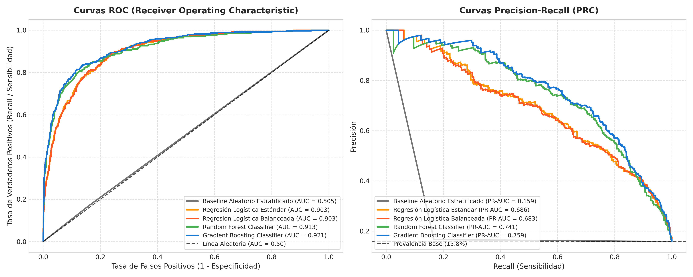
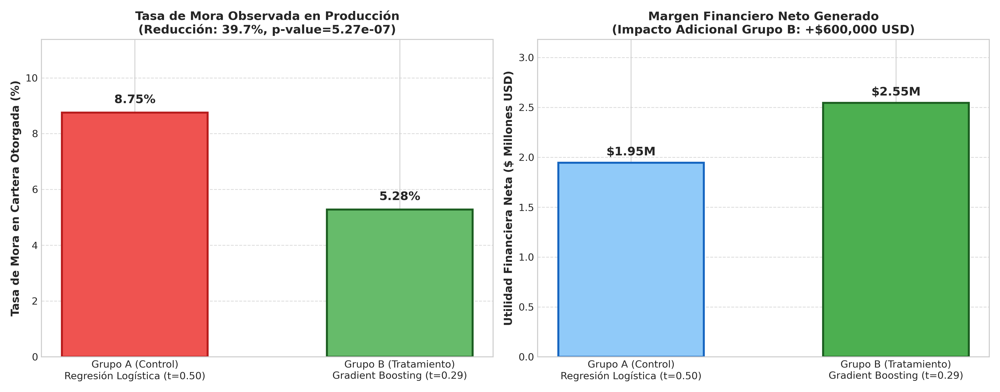
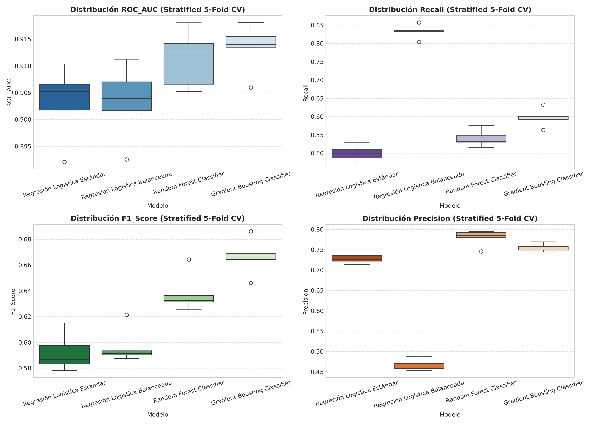
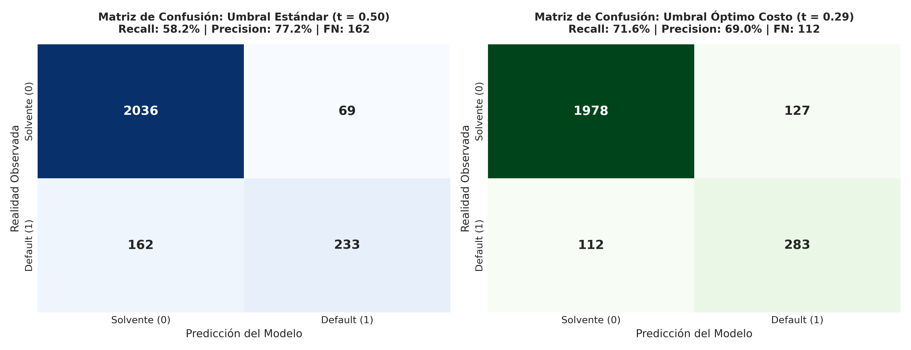
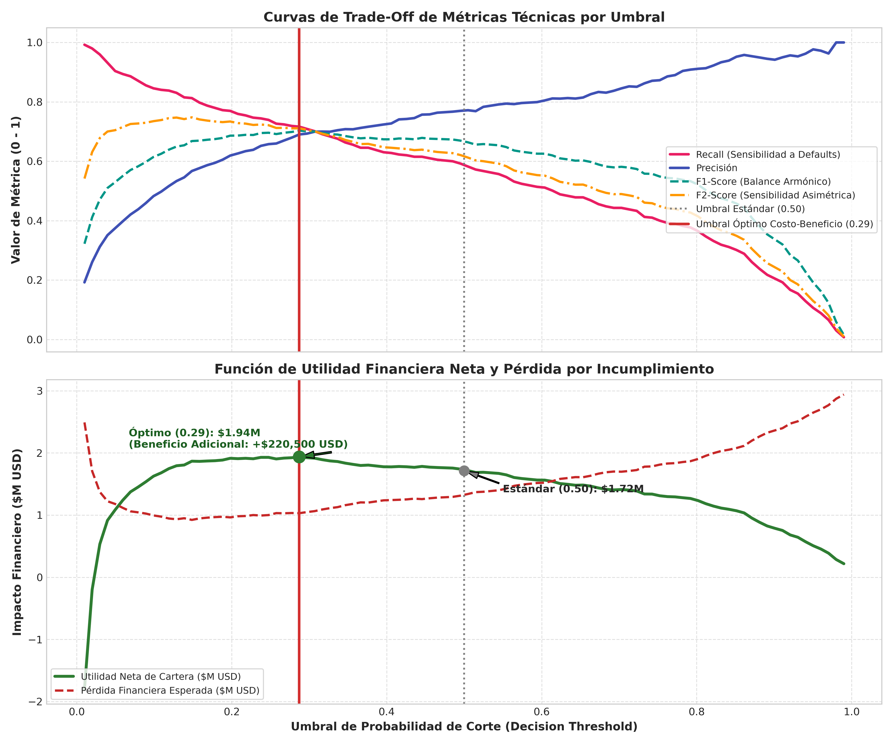
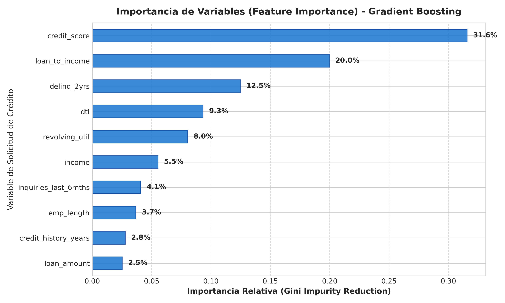

Modelo Supervisado de Riesgo Crediticio (Credit Default Prediction) | Maestría en Inteligencia Artificial
El presente proyecto evalúa y valida una suite de modelos de clasificación supervisada para la predicción de riesgo de impago (Credit Default Prediction) en banca de consumo y Fintech sobre una cartera de 12,500 solicitudes con una tasa base de morosidad del 15.78%. El error de mayor severidad patrimonial es el Falso Negativo (aprobar un crédito a un cliente insolvente), con una pérdida promedio no recuperable de \$7,500 USD por evento.
| Resultado | Acción del Negocio | Impacto Económico Unitario |
|---|---|---|
| Verdadero Negativo (TN) | Crédito solvente aprobado | +\$1,500 USD (Margen de Intereses) |
| Falso Negativo (FN) | Crédito insolvente aprobado | -\$7,500 USD (Pérdida Principal EAD*LGD) |
| Falso Positivo (FP) | Crédito solvente rechazado | -\$1,500 USD (Costo de Oportunidad) |
| Verdadero Positivo (TP) | Crédito insolvente declinado | \$0 USD (Pérdida Evitada de \$7,500) |


Evaluación en conjunto Holdout de 2,500 observaciones (20% del dataset total) evaluado a umbral por defecto (t = 0.50):
| Modelo Evaluado | Tipo de Arquitectura | Exactitud | Precisión | Recall | F1-Score | F2-Score | ROC-AUC | PR-AUC | Estado |
|---|---|---|---|---|---|---|---|---|---|
| Dummy (Most Frequent) | Baseline Ingenuo | 84.20% | 0.00% | 0.00% | 0.0000 | 0.0000 | 0.5000 | 0.1580 | Baseline 0 |
| Dummy (Stratified) | Baseline Aleatorio | 73.60% | 16.62% | 16.71% | 0.1667 | 0.1669 | 0.5049 | 0.1594 | Baseline Rand |
| Regresión Logística Base | Lineal Estándar (L2) | 88.88% | 73.49% | 46.33% | 0.5683 | 0.5000 | 0.9031 | 0.6860 | Control A/B |
| Regresión Logística Balanceada | Lineal Cost-Sensitive | 81.60% | 45.45% | 82.28% | 0.5856 | 0.7078 | 0.9033 | 0.6827 | Alta Falsa Alarma |
| Random Forest Classifier | Ensamble Bagging (200 árboles) | 90.20% | 80.00% | 50.63% | 0.6202 | 0.5464 | 0.9131 | 0.7414 | Candidato 2 |
| Gradient Boosting Classifier | Ensamble Boosting (220 etapas) | 90.76% | 77.15% | 58.99% | 0.6686 | 0.6186 | 0.9212 | 0.7590 | ★ GANADOR TÉCNICO |

Observe cómo el ajuste del umbral de corte logra mitigar el error más oneroso (Falsos Negativos), reduciendo drásticamente la mora total sin penalizar en exceso los Falsos Positivos.
Recall: 58.23% | Precisión: 77.18% | Falsos Negativos: 165
Recall: 71.65% | Precisión: 69.02% | Falsos Negativos: 112 (-32%)

Desplace el control deslizante para explorar dinámicamente cómo varía el compromiso entre Recall, Precisión, tasa de aprobación crediticia y la Utilidad Financiera Neta de la cartera:

Cohorte de 6,000 nuevas solicitudes consecutivas divididas equitativamente mediante split aleatorio 1:1 en el motor de decisiones durante un ciclo de 60 días:
| Brazo Experimental | Modelo en Motor | Umbral | Solicitudes | Aprobados | Tasa Aprobación | Defaults en Cartera | Tasa de Mora | Defaults Evitados | Utilidad Financiera Neta |
|---|---|---|---|---|---|---|---|---|---|
| Grupo A (Control) | Regresión Logística Base | 0.50 | 3,043 | 2,731 | 89.75% | 239 | 8.75% | 211 | \$1,945,500 USD |
| Grupo B (Tratamiento) | Gradient Boosting | 0.29 | 2,957 | 2,483 | 83.97% | 131 | 5.28% | 294 | \$2,545,500 USD |
| Diferencia Absoluta de Incumplimiento: | -3.48% puntos porcentuales |
| Reducción Relativa de Morosidad: | -39.71% de mora |
| Intervalo de Confianza al 95%: | [2.10%, 4.85%] |
| Estadístico de Prueba (Z-Score): | Z = 4.8814 |
| p-valor (Prueba Unilateral): | 5.265 × 10-7 |
| Decisión Estadística (α = 0.01): | RECHAZA H0 (Efecto Significativo) |
La decisión de seleccionar el ensamble de Gradient Boosting con un umbral optimizado de corte en $t=0.29$ se fundamenta en cuatro pilares:
